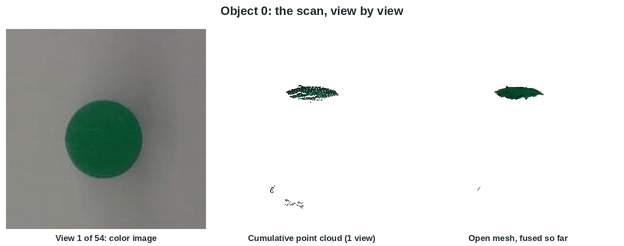

Scanning a pumpkin view by view: the color image, the cumulative point cloud, and the mesh filling in as more views are fused.
Overview
ViamObjectReconstruction finds the objects sitting on a table, drives a Viam-controlled robotic arm with a wrist-mounted Intel RealSense depth camera around each one, and stitches the views into a 3D mesh for each object.
Why many views
A RealSense camera produces noisy depth data and can only see one side of an object at a time. Fusing many views, taken from known arm poses all around an object, captures every side of it, and capturing several frames at each view reduces the noise in the depth data.
Results
The result is a smooth, watertight 3D mesh of each object on the table.
Gallery
